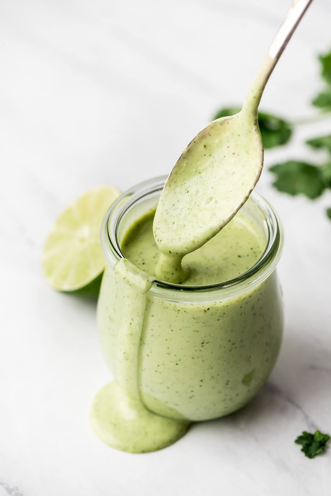

Creamy Lime Sauce

Description
Mmmmmm... You ever had one of those condiments and thought, "This would go good with anything!" Well folks, this is it! While it will make your carnitas infinitely better, you can use this unique sauce flavored with ginger, lime, mayo, and jalapenos (don't be afraid, the spicy stuff is removed) on just about anything from morning omelets to fries.
Ingredients
- 2 large jalapeños, seeded and coaresly chopped
- 2 large garlic cloves, smashed
- 2 tablespoons minced white onion
- 2.5 tablespoon fresh lime juice
- 1 cup mayonnaise
- Salt
- Optional: 1/4 cup finely chopped cilantro
Steps
- In a blender, puree the jalapeños, garlic, ginger, onion, lime juice and water until smooth.
- Add the mayonnaise and cilantro and pulse a few times.
- Season the sauce with salt and serve.